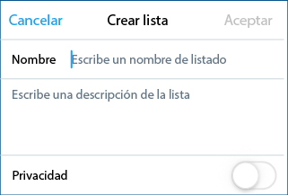

<!DOCTYPE html>
<!--[if lt IE 7]>      <html class="no-js lt-ie9 lt-ie8 lt-ie7"> <![endif]-->
<!--[if IE 7]>         <html class="no-js lt-ie9 lt-ie8"> <![endif]-->
<!--[if IE 8]>         <html class="no-js lt-ie9"> <![endif]-->
<!--[if gt IE 8]><!-->
<html class="no-js" xmlns="http://www.w3.org/1999/html"> <!--<![endif]-->
    <head>
        <meta charset="utf-8">
        <meta http-equiv="X-UA-Compatible" content="IE=edge,chrome=1">
        <title>Digitalízate con Twitter - Banc Sabadell</title>
        <meta name="description" content="">

        <!-- Fonts -->
        <link href="https://fonts.googleapis.com/css?family=Roboto:300,300i,400,400i,500,500i,700,700i" rel="stylesheet">

        <!-- Styles -->
        <link rel="stylesheet" href="../../srcdigital/twitter/css/normalize.min.css">
        <link rel="stylesheet" href="../../srcdigital/twitter/css/style.css">


    </head>
    <body>

    <!-- Google Tag Manager -->
    <noscript><iframe src="//www.googletagmanager.com/ns.html?id=GTM-M7JQGM"
                      height="0" width="0" style="display:none;visibility:hidden"></iframe></noscript>
    <script>(function(w,d,s,l,i){w[l]=w[l]||[];w[l].push({'gtm.start':
            new Date().getTime(),event:'gtm.js'});var f=d.getElementsByTagName(s)[0],
            j=d.createElement(s),dl=l!='dataLayer'?'&l='+l:'';j.async=true;j.src=
            '//www.googletagmanager.com/gtm.js?id='+i+dl;f.parentNode.insertBefore(j,f);
    })(window,document,'script','dataLayer','GTM-M7JQGM');</script>
    <!-- End Google Tag Manager -->

        <header>
            <div class="content">
                
                <div class="lang">
                    <span>Idiomas</span>
                    <ul>
                        <li><a href="index.html" class="active">Castellano</a></li>
                        <li><a href="../../espaidigital/twitter">Català</a></li>
                    </ul>
                </div>
            </div>
        </header>


        <nav>
            <div class="content">
                <a href="../../index.html"></a>
            </div>
        </nav>


        <div class="breadcrumb">
            <div class="content">
                <ul>
                    <li><a href="../../espaciodigital/">Espacio digital</a> ></li>
                    <li><strong>Digitalízate con Twitter</strong></li>
                </ul>
            </div>
        </div>


        <div class="content">
            <div class="intro-text">
                <div class="intro-text__content">
                    <h1>Digitalízate con Twitter</h1>
                    <div class="intro-text__col-left">
                        <p>Twitter es lo que está pasando, es información en tiempo real. Esta red social de mensajes de 280 caracteres tiene más de 319 millones de usuarios activos, y un 82% de ellos acceden desde el móvil.</p>
                    </div>
                    <div class="intro-text__col-right">
                        <p>Twitter te conecta con lo que más te interesa, en cualquier parte del mundo: últimas noticias, eventos deportivos, novedades de tus marcas favoritas, actualidad sobre tu sector, conferencias y encuentros profesionales... Lee lo que otros/as publican y comparte tus ideas al instante.</p>
                    </div>
                </div>
            </div><!-- end .intro-home-text -->
        </div>


        <div class="content">


            <div class="block block__primeros" id="primeros">
                <h2>¿Te animas a tuitear?</h2>
                <h3>Primeros pasos</h3>
                <ul>
                    <li>
                        <span>1</span>
                        <p>Para empezar, solo has de crearte una cuenta en <a href="https://twitter.com/" target="_blank">Twitter.com</a></p>
                    </li>
                    <li>
                        <span>2</span>
                        <p>Personaliza tu perfil y sube una foto, ¡no dejes la silueta que aparece por defecto!</p>
                    </li>
                    <li>
                        <span>3</span>
                        <p>Elige una imagen de portada.</p>
                    </li>
                    <li>
                        <span>4</span>
                        <p>Es muy importante que redactes una biografía que resuma quién eres: tus gustos, tus intereses, etc.</p>
                    </li>
                    <li>
                        <span>5</span>
                        <p>Una vez registrado/a, podrás elegir tu nombre de usuario. Tu usuario es tu identificador en Twitter y puede ser distinto de tu nombre y apellidos. Tiene este formato: @usuario</p>
                    </li>
                </ul>
            </div>


            <div class="block block__anatomia" id="anatomia">
                <h2>Anatomía de un perfil de Twitter</h2>
                <div class="block__anatomia">
                    <div class="block__anatomia--points block__anatomia--points--a"><h3>Foto de perfil</h3></div>
                    <div class="block__anatomia--points block__anatomia--points--b"><h3>Imagen de portada</h3></div>
                    <div class="block__anatomia--points block__anatomia--points--c">
                        <h3>Biografía</h3>
                        <p>En esta presentación de 160 caracteres como máximo, puedes incluir hashtags y no te olvides de poner las palabras clave por las que quieres que te encuentren: Twitter utiliza esta información en las búsquedas.</p>
                    </div>
                </div>
            </div>


            <div class="block block__tuit" id="tuit">
                <h2>Anatomía de un Tuit</h2>
                <div class="block__tuit">
                    <div class="block__tuit--points block__tuit--points--a"><h3>Foto de perfil</h3></div>
                    <div class="block__tuit--points block__tuit--points--b"><h3>Nombre de usuiaro</h3></div>
                    <div class="block__tuit--points block__tuit--points--c"><h3>Más opciones</h3></div>
                    <div class="block__tuit--points block__tuit--points--d"><h3>Hashtag</h3></div>
                    <div class="block__tuit--points block__tuit--points--e"><h3>Mención</h3></div>
                    <div class="block__tuit--points block__tuit--points--f"><h3>Enlace</h3></div>
                    <div class="block__tuit--points block__tuit--points--g"><h3>Número de "Me gusta"<br /> Recibidos</h3></div>
                    <div class="block__tuit--points block__tuit--points--h"><h3>Foto insertada</h3></div>
                    <div class="block__tuit--points block__tuit--points--i"><h3>Número de retuiteos</h3></div>
                    <div class="block__tuit--points block__tuit--points--j"><h3>Tuiteros que han hecho "Me gusta" en este tuit</h3></div>
                    <div class="block__tuit--points block__tuit--points--k"><h3>Responder</h3></div>
                    <div class="block__tuit--points block__tuit--points--l">
                        <h3>Retuitear</h3>
                        <p>Retuitea lo que te guste. Busca el icono  debajo del tuit que te gusta y compártelo con tus seguidores/as. Si quieres, puedes añadir un comentario antes de compartirlo.</p>
                    </div>
                    <div class="block__tuit--points block__tuit--points--m"><h3>"Me gusta"</h3></div>
                </div>
            </div>


            <div class="block block__navega" id="navega">
                <h2>Navega por Twitter</h2>
                <div class="block__navega">
                    <div class="block__navega--points block__navega--points--a">
                        <h3>Inicio</h3>
                        <p>También llamado cronología o <i>timeline</i>. Aquí puedes ver los tuits de todos/as los/as usuarios/as a los/as que sigues, en formato secuencial.</p>
                    </div>
                    <div class="block__navega--points block__navega--points--b">
                        <h3>Notificaciones</h3>
                        <p>En esta pestaña te aparecen todas las interacciones con tu cuenta: nuevos/as seguidores/as, menciones que has recibido, retuits de tus tuits, tus tuits que alguien ha marcado como "me gusta"...</p>
                    </div>
                    <div class="block__navega--points block__navega--points--c">
                        <h3>Momentos</h3>
                        <p>Son historias creadas a partir de una selección de tuits. En esta pestaña aparecen los momentos creados por otros/as usuarios/as. Desde aquí también puedes crear tus propios momentos, clicando en el botón que aparece en la parte superior derecha de la pantalla.</p>
                    </div>
                    <div class="block__navega--points block__navega--points--d">
                        <h3>Mensajes</h3>
                        <p>Los mensajes directos son conversaciones privadas con uno o varios de tus seguidores/as. Solo puedes enviar mensajes directos a tus seguidores/as y recibirlos de los usuarios/as a los/as que sigues.</p>
                    </div>
                    <div class="block__navega--points block__navega--points--e">
                        <h3>Para empezar a publicar, busca el icono y escribe tu tuit</h3>
                        <p>Puedes añadir fotos, vídeos, encuestas, enlaces y un máximo de 280 caracteres de texto. Los enlaces se acortan automáticamente y siempre restan 23 caracteres. Haz clic en "Twittear" y ¡tu tuit estará publicado!</p>
                    </div>
                    <div class="block__navega--points block__navega--points--f">
                        <h3>Sigue a otros/as tuiteros/as</h3>
                        <p>Puedes buscar a tus amigos/as sincronizando los contactos de tu agenda o manualmente poniendo su nombre en el buscador. Cuando empieces a seguir a usuarios/as, Twitter te sugerirá otros/as similares. Verás los tuits que publica la gente a la que sigues en tu cronología o <i>timeline</i>.</p>
                    </div>
                </div>
            </div>


            <div class="block block__quote" id="first-quote">
                <p>Estos vídeos te ayudarán a dar los primeros pasos en Twitter:</p>
                <a href="https://support.twitter.com/articles/332061" target="_blank">https://support.twitter.com/articles/332061</a>
            </div>


            <div class="block block__sacale" id="sacale">
                <h2>¡Sácale el máximo partido a Twitter!</h2>
                <h3>5 funcionalidades para tuiteros avanzados</h3>
                <div class="block__sacale--points block__sacale--points--a">
                    <h4>Listas: organiza tu <i>timeline</i></h4>
                    <p><a href="https://support.twitter.com/articles/346996#" target="_blank">Crea listas</a> por temática o área de interés (por ejemplo, una lista con tus amigos/as, una lista de tuiteros/as que hablan de economía digital, etc.). Así verás desde un único sitio los tuits que han publicado los miembros de esa lista. Además, puedes añadir a las listas usuarios/as a los que no sigues. También puedes seguir las listas que otros usuarios hayan creado.</p>
                </div>
                <div class="block__sacale--points block__sacale--points--b">
                    
                </div>
                <div class="block__sacale--points block__sacale--points--c">
                    <h4>Stickers: ¡potencia la creatividad en tus fotos!</h4>
                    <p>Cuando publicas una imagen en Twitter desde tu móvil, puedes personalizarla con <i>stickers</i>. Clica sobre el icono  y se te abrirá la biblioteca de accesorios que puedes añadir a tu foto. ¡Es muy fácil y divertido!</p>
                </div>
                <div class="block__sacale--points block__sacale--points--d">
                    <h4>Periscope: retransmite vídeo en directo</h4>
                    <p>Si tuiteas desde el móvil, puedes retransmitir vídeo en directo desde la opción "en directo" que te aparece al crear un nuevo tuit. Tus seguidores/as podrán interactuar en tiempo real y, una vez finalizada la emisión, cualquiera podrá ver la grabación.</p>
                </div>
                <div class="block__sacale--points block__sacale--points--e">
                    <h4>EN DIRECTO</h4>
                </div>
                <div class="block__sacale--points block__sacale--points--f">
                    <h4>Estadísticas: descubre qué gusta de tu actividad</h4>
                    <p>Puedes consultar las estadísticas de tu actividad en Twitter desde <a href="https://analytics.twitter.com/about" target="_blank">analytics.twitter.com</a>. Allí podrás saber qué tuits han gustado más, cuántos seguidores/as has ganado, cuántas veces te han mencionado...</p>
                </div>
                <div class="block__sacale--points block__sacale--points--g">
                    <h4>TweetDeck: usa Twitter como un/a profesional</h4>
                    <p>Con <a href="https://tweetdeck.twitter.com/" target="_blank">tweetdeck.twitter.com</a> podrás gestionar varias cuentas, ver las listas que has creado, hacer búsquedas y monitorizar conversaciones desde un único lugar. Es ideal para trabajar en equipo y actualizar una cuenta de forma colaborativa sin tener que compartir la contraseña.</p>
                </div>
            </div>


            <div class="block block__quote" id="second-quote">
                <p>Recuerda que en la <a href="http://www.sabadellcampus.com/espaciodigital/redes-sociales/index.html" target="_blank">"Guía básica de las redes sociales"</a><br /> encontrarás algunos consejos de netiqueta para no meter la<br /> pata en redes sociales.</p>
            </div>


            <div class="block block__sabias" id="sabias">
                <h2>Sabías que...</h2>
                <div class="block__sabias--col">
                    <ul>
                        <li><p>Puedes seguir hasta 5.000 cuentas y tener un número ilimitado de seguidores/as.</p></li>
                        <li><p>Tú eliges <a href="https://support.twitter.com/articles/230579#" target="_blank">cómo quieres que se ordene tu <i>timeline</i></a>: de forma cronológica o los mejores tuits primero, según el algoritmo de Twitter.</p></li>
                        <li><p>Los perfiles con una insignia azul al lado del nombre están verificados.  Esto sirve para confirmar la autenticidad de las cuentas de interés público.</p></li>
                        <li><p>Los mensajes directos no tienen límite de extensión.</p></li>
                        <li><p>Si los 280 caracteres se te quedan cortos, puedes conectar hasta 25 tuits para crear un hilo. Solo tienes que clicar sobre el icono más  que aparece al lado de “Twittear” en cuanto empiezas a escribir un tuit.</p></li>
                    </ul>
                </div>
                <div class="block__sabias--col">
                    <ul>
                        <li><p>Traducir un tuit es tan sencillo como pulsar el icono  que aparece debajo de los tuits escritos en un idioma distinto al de tu configuración.</p></li>
                        <li><p>Puedes <a href="https://support.twitter.com/articles/166743#" target="_blank">fijar un tuit en tu perfil</a> para que cuando otros usuarios visiten tu página sea el primero que vean.</p></li>
                        <li><p>Silenciar, bloquear y reportar a usuarios que hacen un mal uso de Twitter es muy sencillo: <a href="https://twitter.com/ayuda/status/586603287442513922" target="_blank">en este vídeo te explican cómo hacerlo</a>.</p></li>
                        <li><p>Puedes descargar todos tus tuits <a href="https://support.twitter.com/articles/20170304#" target="_blank">solicitando tu archivo de Twitter</a>.</p></li>
                        <li><p>Tus tuits son públicos por defecto. Si no quieres que sea así, puedes proteger tu cuenta y solo los usuarios que tú aceptes podrán ver tus tuits.</p></li>
                    </ul>
                </div>
            </div>


            <div class="block block__quote" id="third-quote">
                <p>¿Quieres saber más? Visita el Centro de Ayuda de Twitter</p>
                <a href="https://support.twitter.com/" target="_blank">https://support.twitter.com/</a>
            </div>

            <footer class="footer home">
                <div class="content">
                    <div class="border-line">
                        <ul class="footer-content">
                            <li class="footer-content__text">
                                <p>Banco de Sabadell, S.A., Avda. Oscar Esplà, 37, 03007 Alicante, inscrito en el Registro Mercantil de Alicante, Tomo 4070, Folio 1, Hoja A-156980 - CIF A08000143.</p>
                                <p>Dirección de correo electronico. <a href="mailto:espaciodigital@bancsabadell.com">espaciodigital@bancsabadell.com</a>. Banco de Sabadell, S.A., 2017. Todos los derechos reservados.</p>
                            </li>
                        </ul>
                    </div><!-- end .border-line -->
                </div>
            </footer>


        </div><!-- end .content -->


        <!-- Scripts -->
        <script src="../../srcdigital/twitter/js/vendor/jquery/jquery-1.10.2.min.js"></script>
        <script src="../../srcdigital/twitter/js/vendor/validate/jquery.validate-1.11.1.min.js"></script>
        <!--[if lt IE 9]>
        <script src="../../srcdigital/twitter/js/vendor/placeholder/jquery.placeholder.min.js"></script>
        <![endif]-->
        <script src="../../srcdigital/twitter/js/main.js"></script>
        <script src="js/form.js"></script>
    </body>
</html>
